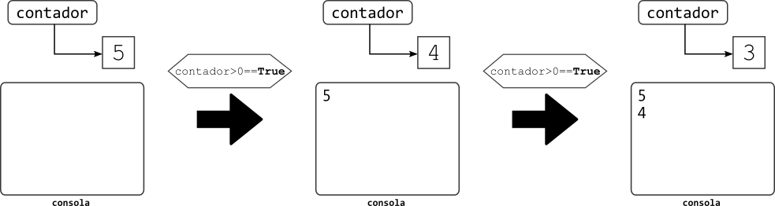
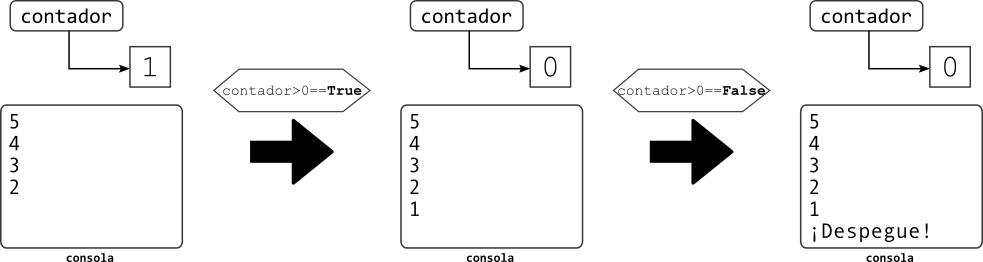

Versión borrador / preliminar
Este documento es una versión preliminar para uso interno. Si encuentra algún problema o error, o si tiene algún comentario por favor repórtelo a los autores.
Instrucciones repetidas#
Objetivo de la sección
El objetivo de esta sección es introducir las instrucciones repetitivas utilizando la estructura while. Esto lo usaremos para ciclos donde se conoce con anterioridad la cantidad de iteraciones y también para ciclos donde sea necesario reconocer una condición de parada.
Hasta el momento los programas que hemos construido ejecutan cada instrucción una única vez, a menos que se encuentren dentro de funciones que se llamen varias veces. El problema es que desde que se escriba el programa también va a quedar establecida la cantidad de veces que se llame cada función.
Tomemos por ejemplo el caso del juego de 21 (BlackJack) que estudiamos en el nivel anterior. Tal como está construido, el jugador y la casa tienen como máximo 5 turnos para jugar y sería necesario modificar el código fuente del programa para que pudieran tener más turnos. En particular, para que tuvieran una sexta carta tendríamos que agregar las siguientes instruciones a la función iniciar_aplicacion de la consola:
if continuar_juego:
continuar_juego = turno_jugador(mano_jugador, mano_casa)
if continuar_juego:
continuar_juego = turno_casa(puntos_jugador, mano_casa)
Esto puede solucionarse a través del uso de instrucciones iterativas, las cuales nos permiten expresar cuántas veces tiene que ejecutarse una instrucción sin tener que escribirla muchas veces. Más aún, la cantidad no tendría que estar definida a priori sino que se le podría preguntar al usuario o podría depender de una condición que se revise dentro del programa.
En esta sección vamos a introducir el concepto de instrucciones iterativas y vamos a explicar cómo se implementan en Python usando la instrucción while. Esto lo vamos a ilustrar con varios ejemplos y, en particular, vamos a mostrar su aplicación en matemáticas para el cálculo de series y sumatorias. Al final de la sección introduciremos también la instrucción for de Python, aunque su uso completo lo desarrollaremos en una sección posterior.
Repetir instrucciones usando while#
En Python, así como en muchos otros lenguajes, la base de las instrucciones iterativas es una expresión como la siguiente: “mientras que X sea cierto, haga Y”. En inglés, esto se traduciría como “while X, do Y”. Por esto, la instrucción fundamental para expresar iteraciones en Python y en muchos lenguajes se llama while.
Así como un if define una estructura en la cual se tiene que tener como mínimo una condición y un cuerpo, en el caso del while ocurre algo similar: se requiere una condición (la X en la expresión anterior) y un cuerpo (la Y). La principal diferencia con un if es que la condición se va a evaluar muchas veces y que el cuerpo se va a ejecutar cada vez que la condición sea verdadera. Observemos esto en un ejemplo:
contador = 5
while contador > 0:
print(contador)
contador -= 1
print("¡Despegue!")
Lo primero que encontramos en este código es que vamos a crear una nueva variable llamada contador y la vamos a inicializar en 5. A continuación inicia un bloque while, donde la condición es contador > 0. Esto quiere decir que el cuerpo del while (todo lo que está indentado después de :) se va a ejecutar varias veces, hasta que la condición deje de ser verdadera. Esta condición se evaluará antes de la primera vez que se ejecute el cuerpo y se volverá a evaluar después de cada ejecución del cuerpo. El cuerpo de este while tiene sólo dos instrucciones: la primer imprime en la consola el valor actual de la variable contador mientras que la segunda reduce el valor de contador en uno. La última instrucción del ejemplo imprime la cadena '¡Despegue!' en la consola.
La siguiente imagen muestra lo que ocurriría durante las primeras iteraciones del ciclo. Al iniciar, la consola estaría vacía y se crearía sólo la variable contador con valor 5. Al iniciar el ciclo lo primero que se hace es evaluar la condición y, como es verdadera, se ejecuta el cuerpo del ciclo. Esto imprime en la consola el valor del contador en ese momento (5) y luego decremental contador, dejando su valor en 4. En este punto se vuelve a evaluar la condición y como sigue siendo cierta se ejecuta nuevamente el cuerpo del ciclo.

Veamos ahora lo que ocurre en las iteraciones finales, cuando el contador haya alcanzado el valor 1 y se hayan mostrado en la consola los números entre 5 y 2. Al evaluar la condición el resultado seguirá siendo verdadero, así que el cuerpo se ejecutará nuevamente: se imprime el número 1 en la consola y se decrementa el valor de contador. A continuación se evalua la condición pero esta vez resulta falsa porque ahora contador no tiene un valor mayor a 0. Esto hace que se termine la ejecución del ciclo y se ejecuten las instrucciones siguientes. En este caso, esto significa mostrar en la consola la cadena '¡Despegue!.

Algo muy interesante para notar en el ejemplo anterior, y que se puede ver en la figura, es que el valor de la variable contador se mantiene al terminar el ciclo. Es decir que sigue siendo 0 y no vuelve al valor que tenía antes de que se ejecutara el ciclo.
Elementos de un while#
Acabamos de mostrar con un ejemplo cómo es la ejecución de un while. Ahora estudiaremos con un poco más de cuidado los diferentes elementos que se tienen que considerar cuando se construya una instrucción iterativa. Para esto usaremos la siguiente función que sirve para calcular el factorial de un número recordando que:
def factorial(n: int) -> int:
resultado = 1
numero_actual = 2
while numero_actual <= n:
resultado = resultado * numero_actual
numero_actual += 1
return resultado
Esta función calcula el factorial del número n multiplicando entre ellos todos los números anteriores. El punto importante es que esto lo vamos a hacer número por número, partiendo desde el número 1 y llegando hasta el número n.
Estudiemos ahora en detalle cada elemento de la función.
Inicialización#
Aunque no es parte explícita de un while, las instrucciones que se encuentran antes son importantísimas porque realizan la inicialización del ciclo. Es decir, dejan las variables que nos interesen en el estado necesario para que se pueda ejecutar el ciclo y se obtenga el resultado esperado.
En el caso de nuestra función, hay dos instrucciones que sirven para inicializar el ciclo:
resultado = 1
numero_actual = 2
La primera instrucción sirve para crear una variable donde dejaremos el resultado de nuestra función. En este caso, ese resultado será el factorial del parámetro n. La variable resultado la hemos inicializado en 1 por varios motivos que discutiremos más adelante.
La segunda instrucción sirve para crear una variable que nos permitirá saber cuál es el siguiente número que tenemos que multiplicar para seguir calculando el factorial. En este caso, la variable numero_actual la inicializamos en 2 porque el resultado ya estaba inicializado en 1. Si la variable la hubiéramos inicializado en 1 no habría cambiado nuestro programa, pero habría hecho una iteración más en el que habría multiplicado 1*1.
Condición del ciclo#
La siguiente parte del análisis de nuestra función se concentra en la condición del while. Debemos recordar que cuando la condición de un while sea verdadera, el cuerpo del ciclo deberá ejecutarse. Si lo vemos desde el punto de vista opuesto, el cuerpo del ciclo tendrá que ejecutarse hasta que la condición sea falsa.
Las dos perspectivas son equivalentes pero, dependiendo del problema, es posible que una de las dos perspectiva sea más fácil de entender. La recomendación que podemos hacer es utilizar nombres de variables que sean muy claros, de tal forma que la condición sea fácil de leer. Por ejemplo, en el caso de nuestra función, la condición puede leerse fácilmente como “Mientras que el número actual sea menor o igual que n, se debe hacer …”.
while numero_actual <= n:
La misma condición también se podría haber escrito de la siguiente forma, en la cual la lectura natural sería “Mientras que el número actual no sea mayor a n, se debe hacer …”.
while not numero_actual > n:
Cuerpo del ciclo#
Después de evaluada la condición de un while, se ejecuta una o varias veces el cuerpo del ciclo. El caso de nuestra función, el cuerpo tiene dos instrucciones:
resultado = resultado * numero_actual
numero_actual += 1
La primera instrucción es la que se encarga de ir acumulando en la variable resultado el valor del factorial del número. Para esto, la instrucción toma el valor que se había acumulado hasta el momento, lo multiplica por el número actual y vuelve a guardarlo en resultado. La segunda instrucción se encarga de ir incrementando de uno en uno el valor de numero_actual.
La siguiente tabla muestra cómo va cambiando el valor de resultado y de numero_actual a medida que se ejecuta el ciclo:
|
|
Valor calculado en |
|---|---|---|
1 |
2 |
1! |
2 |
3 |
2! |
6 |
4 |
3! |
24 |
5 |
4! |
120 |
6 |
5! |
720 |
7 |
6! |
Antes de la primera ejecución, el valor de resultado es 1 y el valor de numero_actual es 2, como se determinó en la inicialización. Eso quiere decir que el valor de resultado es equivalente al valor de 1! y que el siguiente número por el que debería multiplicarse es 2.
Después de la primera ejecución del ciclo, el valor de resultado se modifica para que sea 2, y el valor de numero_actual se incrementa en uno. Esto quiere decir que ahora el valor de resultado es equivalente al valor de 2!.
En la siguiente iteración el valor de resultado se multiplica por 3 y y el valor de numero_actual llega a 4. Como ahora el valor de resultado es 6, quiere decir que es equivalente a 3!.
El proceso continua hasta que numero_actual es mayor a n. Por ejemplo, si n fuera 6, entonces en la última iteración resultado se multiplicaría por 6 quedando con un valor equivalente al de 6! y numero_actual llegaría a 7. La siguiente vez que se revisara la condición ya no sería verdadera y el ciclo terminaría.
Avance#
La segunda instrucción del cuerpo, numero_actual += 1, tiene el rol de avanzar el ciclo hacia su terminación. Este rol es muy importante dentro de cualquier ciclo: siempre tiene que haber una o varias instrucciones que hagan que con cada iteración el ciclo esté más cerca de terminar. Si no se cumpliera esto, el ciclo nunca terminaría.
En nuestra función para el cálculo del factorial, con cada iteración aumentamos en uno el valor de numero_actual, con lo cual nos aseguramos que eventualmente este número sea mayor a n y el ciclo termine. En el caso del contador para el despegue, vamos reduciendo el valor de contador haciendo que eventualmente se vuelva falsa la condición del ciclo: contador > 0.
Problema con el avance#
En los dos ejemplos que hemos estudiado identificar el avance fue relativamente fácil. Más adelante en esta sección estudiaremos algunos programas donde no es tan fácil ver que el ciclo se está acerca acercando a la terminación. Por ahora veamos unos ejemplos de programas con problemas y que resultarán en ciclos infinitos.
Alejarse de terminación
i = 1
while i > 0:
print(i)
i += 1
print("Terminé")
Este primer programa nunca termina porque el valor de i siempre es mayor a 0.
Brincarse la meta
i = 1
while i != 10:
print(i)
i += 2
print("Terminé")
Este programa tampoco termina porque i siempre va a ser diferente que 10. El problema acá es que estamos incrementando i de dos en dos, pero empezando en 1. Esto quiere decir que i sólo va a asumir valores impares. Una forma fácil de solucionar este problema habría sido cambiar la condición para que fuera `i < 10’.
Problemas de indentación
i = 1
while i < 10:
print(i)
i += 1
print("Terminé")
Aunque este programa tiene todas las instrucciones que se esperarían, tampoco terminará nunca su ejecución. El problema acá es que el avance no está dentro del ciclo: la variable i siempre va a tener el valor 1 porque el único lugar donde se cambia es inmediatamente después del ciclo.
Olvidar el avance
i = 1
while i < 10:
print(i)
print("Terminé")
Aunque es muy sencillo, este programa ilustra el problema que se presenta más frecuentemente cuando se trabaja con ciclos: olvidar el avance. Como en este caso i nunca cambia de valor, el ciclo no se acerca a terminación a medida que se ejecuta.
Soluciones alternativas al problema del factorial#
La solución al problema de calcular el factorial que presentamos es sólo una de muchas que se podrían haber planteado. A continuación presentamos otras soluciones que usted podría haberse imaginado. Nuestro objetivo es que usted vea que cualquier problema puede resolverse de varias maneras. Salvo la primera (empezar desde 1), ninguna de las soluciones que vamos a presentar es mejor o peor que otra: son equivalentes, son prácticamente igual de rápidas y cualquier persona debería ser capaz de entenderlas sin mucho esfuerzo.
Empezar desde 1
def factorial_v2(n: int) -> int:
resultado = 1
numero_actual = 1
while numero_actual <= n:
resultado = resultado * numero_actual
numero_actual += 1
return resultado
Esta versión de la función tiene sólo una pequeña diferencia con respecto a la original: en lugar de inicializar numero_actual en 2, se incializó en 1. Esto hace que se tenga que hacer una iteración más al inicio, en la cual se hace la siguiente asignación (resultado tiene también valor 1 en ese momento):
resultado = 1 * 1
De atrás para adelante
def factorial_v3(n: int) -> int:
resultado = n
numero_actual = n-1
while numero_actual > 1:
resultado = resultado * numero_actual
numero_actual -= 1
return resultado
Esta nueva versión de la función se basa en la descomposición del factorial al contrario:
De esta forma, para calcular el factorial de n se tiene que tomar el valor n y multiplicarlo por todos los valores menores a él. En nuestra función esto lo logramos inicializando resultado en n y numero_actual en n-1, cambiando el avance para que vaya restándole 1 a numero_actual y cambiando la condición para que el ciclo termine cuando numero_actual sea 1.
Restando
def factorial_v4(n: int) -> int:
resultado = n
resta = 1
while resta < n:
resultado = resultado * (n - resta)
resta += 1
return resultado
En este caso nos basamos en la misma descomposición que en el caso anterior, pero ahora calculamos cada término como una resta. Es decir que a medida que avanzamos en el ciclo le vamos restando un número mayor a n, pero nunca guardamos ese resultado como lo hacíamos antes con numero_actual.
Cambio de límites
def factorial_v5(n: int) -> int:
resultado = 1
ultimo_numero = 1
while ultimo_numero < n:
resultado = resultado * (ultimo_numero + 1)
ultimo_numero += 1
return resultado
Esta última versión de la función cambia los límites dentro de los que se está trabajando: en lugar de que numero_actual vaya de 2 a n, en este caso ultimo_numero va de 1 a n-1. Esto implica un cambio en la condición del ciclo para que no use el operador <= sino el operador ‘<’.
Un poco de algorítmica#
Always remember, however, that there’s usually a simpler and better way to do something than the first way that pops into your head.
Donald Knuth
Lo que ya estudiamos en este capítulo nos sirvió para introducir el vocabulario fundamental de instrucciones iterativas y los principales elementos sintácticos de Python para soportar la construcción de ciclos. A continuación, vamos a empezar a discutir la parte metodológica de la construcción de ciclos. Es decir, la forma en la que se debe pensar la solución a un problema que requiere del uso de ciclos [1].
La discusión la ilustraremos usando el siguiente problema:
Dada una cadena de caracteres, usted debe calcular cuál es la vocal que más aparece en la cadena. Si hay vocales empatadas en la primera posición, la respuesta debería ser la vocal que vaya antes en el orden lexicográfico. La cadena puede tener letras mayúsculas y minúsculas, así como signos de puntuación, números y espacios.
El plan que vamos a seguir, y que usted debería seguir siempre que se enfrente a un problema, es el siguiente:
Leer y entender el problema
Plantear una estrategia global de solución
Plantear una estrategia de solución para cada parte de la solución global
Construir la solución para cada parte de la solución global
Construir la solución global a partir de las partes que ya construimos
Leer y entender el problema#
Es imposible resolver un problema que si no se ha entendido antes. Lea detenidamente el problema con el que vamos a trabajar y hágase las siguientes preguntas:
¿Entendió el contexto general del problema?
¿Entendió lo que su programa tiene que hacer específicamente?
¿Entendió las reglas particulares que aplican para el problema?
Verifique esto calculando manualmente qué debería responder el problema para cada una de las siguientes cadenas:
'aaa''aeeiiiooouuuu''uoiea''Uuuuyyyyyy!!!'¡Oe Oe Ooooeeeea!'Esto no es ni una prueba ni un simulacro'''
Escriba las respuestas para cada uno de los casos y compárelo con nuestras respuestas (ver nota con respuestas [2]). Si para alguna de las preguntas usted respondió algo diferente, revise nuevamente el enunciado hasta que entienda por qué su respuesta y la nuestra son diferentes.
Plantear una estrategia de solución para cada parte de la solución global#
Construir la solución para cada parte de la solución global#
###Construir la solución global a partir de las partes que ya construimos
Sumatorias y series#
ejemplos de sumatorias
sum i de 1 a n = n(n+1)/2
Uso de ecuaciones dentro del markdown …
def sumar_numeros(n: int) -> int:
i = 1
sumatoria = 0
while i <= n:
sumatoria += i
i += 1
return sumatoria
ejemplos de series
sum n: 1/2^n
sum i: -1^(i+1) * 4 / 2i - 1 == PI
El truco del centinela#
Motivación del centinela: Buscar un número aleatorio (dados)
import random
numero_buscado = 6
numero_intentos = 0
encontre_numero = False
while not encontre_numero:
numero_intentos += 1
nuevo_numero = random.randint(1, 6)
if nuevo_numero == numero_buscado:
encontre_numero = True
print("Encontré el número", numero_buscado, "después de", numero_intentos, "intentos")
Máximo común divisor
Buscar una vocal minúscula en una cadena
OJO: De Morgan!
Cálculo del seno de un ángulo#
Una de las formas para calcular el seno de un ángulo es utilizar la siguiente serie, donde x es el ángulo en radianes.
Vamos a implementar una función que calcule el valor de la serie pero, como ya sabemos, no podemos construir un ciclo que realice un número infinito de operaciones. En la primera versión de nuestra función, vamos a utilizar un número fijo de iteraciones (5) y vamos a ver qué tan bien se comporta comparando el resultado que obtengamos con el que nos ofrece la función math.sin.
import math
def seno_v1(x:float) -> float:
""" Esta función calcula el seno del ángulo x utilizando los 5 primeros términos de la serie.
Parámetros:
x (float): El ángulo en radianes para el que se quiere calcular el seno.
Retorno:
(float): El seno del ángulo
"""
iteraciones = 5
suma = 0
n = 0
while n < iteraciones:
signo = 1 if n % 2 == 0 else -1
denom = math.factorial(2*n + 1)
mult = pow(x, 2*n + 1)
suma += (signo*mult/denom)
n += 1
return suma
def probar(angulo: float) -> None:
""" Invoca la función seno_v1 para calcular el seno del ángulo y compara el resultado
con el resultado que arroja la función sin del módulo math.
Parámetros:
angulo (float): El ángulo en radianes con el que se va a hacer la prueba
"""
res = seno_v1(angulo)
real = math.sin(angulo)
error = res - real
print("Ángulo:", round(angulo, 2), "Calculado:", round(res, 2), "Real:", round(real, 2), "Error:", round(error, 4))
probar(0)
probar(math.pi/6)
probar(math.pi/3)
probar(math.pi/2)
probar(math.pi)
Al ejecutar este programa obtenemos el siguiente resultado en la consola, que nos muestra que nuestra función es bastante precisa a pesar de utilizar sólo 5 iteraciones.
Ángulo: 0 Calculado: 0.0 Real: 0.0 Error: 0.0
Ángulo: 0.52 Calculado: 0.5 Real: 0.5 Error: 0.0
Ángulo: 1.05 Calculado: 0.87 Real: 0.87 Error: 0.0
Ángulo: 1.57 Calculado: 1.0 Real: 1.0 Error: 0.0
Ángulo: 3.14 Calculado: 0.01 Real: 0.0 Error: 0.0069
Sin embargo, esta situación cambia bastante si aumentamos el tamaño del ángulo y realizamos pruebas como las siguientes:
probar(math.pi * 1.5)
probar(math.pi * 2)
probar(math.pi * 2.5)
probar(math.pi * 3)
probar(math.pi * 4)
En este caso, los resultados en la consola nos muestran que nuestra función no funciona de forma muy buena a medida que los ángulos crecen:
Ángulo: 4.71 Calculado: -0.44 Real: -1.0 Error: 0.5556
Ángulo: 6.28 Calculado: 11.9 Real: -0.0 Error: 11.8996
Ángulo: 7.85 Calculado: 123.75 Real: 1.0 Error: 122.7476
Ángulo: 9.42 Calculado: 795.87 Real: 0.0 Error: 795.8724
Ángulo: 12.57 Calculado: 14008.9 Real: -0.0 Error: 14008.902
Una forma de solucionar este problema sería aumentar el número de iteraciones, pero más adelante el mismo problema volvería a presentarse. Una mejor alternativa, muy utilizada en cálculos como estos, es aplicar la estrategia del centinela. Para esto tenemos que notar que los términos de la serie son cada vez más pequeños porque (2n+1)! domina sobre x^(2n+1). Lo que podemos hacer es detener el ciclo cuando los nuevos términos de la serie no estén modificando significativamente el valor final. Esta estrategia la implementamos en la siguiente función, la cual depende de un epsilon que va a definir cuándo suspenderemos la búsqueda.
import math
def seno_v2(x:float, epsilon: float) -> float:
""" Esta función calcula el seno del ángulo x utilizando la serie.
Se utiliza el parámetro epsilon para definir la precisión de la respuesta.
Parámetros:
x (float): El ángulo en radianes para el que se quiere calcular el seno.
epsilon (float): La precisión de la respuesta
Retorno:
(float): El seno del ángulo con una precisión de 'epsilon'.
"""
suma = 0
suma_anterior = -1
n = 0
while abs(suma - suma_anterior) > epsilon:
signo = 1 if n % 2 == 0 else -1
denom = math.factorial(2*n + 1)
mult = pow(x, 2*n + 1)
suma_anterior = suma
suma += (signo*mult/denom)
n += 1
# Se imprime la cantidad de iteraciones para saber cuántas son necesarias en cada caso
print("Fueron", n, "iteraciones")
return suma
def probar2(angulo: float) -> None:
""" Invoca la función seno_v2 para calcular el seno del ángulo y compara el resultado
con el resultado que arroja la función sin del módulo math.
Se utiliza un valor para epsilon de 0.01
Parámetros:
angulo (float): El ángulo en radianes con el que se va a hacer la prueba
"""
res = seno_v2(angulo, 0.01)
real = math.sin(angulo)
error = res - real
print("Ángulo:", round(angulo, 2), "Calculado:", round(res, 2), "Real:", round(real, 2), "Error:", round(error, 4))
La nueva versión de nuestra función seno ahora espera dos parámetros, x y epsilon, y no depende de un número de iteraciones fijo. En su lugar, la función mantiene todo el tiempo dos valores suma y suma_anterior: el primero representa el valor de la sumatoria hasta la iteración actual; el segundo representa el valor de la sumatoria hasta la iteración anterior. Mientras que la diferencia entre estos dos valores sea inferior a epsilon (abs(suma - suma_anterior) > epsilon), el ciclo continuará ejecutándose.
La nueva función probar2 es muy similar a la función probar: el único cambio es que ahora esta función llama a seno_v2 y que además utiliza 0.01 como valor para el parámetro epsilon.
A continuación mostramos el resultado de probar nuestra nueva función con los primeros ángulos: 0, \(\pi\)/6, \(\pi\)/3, \(\pi\)/2 y \(\pi\):
Fueron 1 iteraciones
Ángulo: 0 Calculado: 0.0 Real: 0.0 Error: 0.0
Fueron 3 iteraciones
Ángulo: 0.52 Calculado: 0.5 Real: 0.5 Error: 0.0
Fueron 4 iteraciones
Ángulo: 1.05 Calculado: 0.87 Real: 0.87 Error: -0.0
Fueron 4 iteraciones
Ángulo: 1.57 Calculado: 1.0 Real: 1.0 Error: -0.0002
Fueron 6 iteraciones
Ángulo: 3.14 Calculado: -0.0 Real: 0.0 Error: -0.0004
En este resultado podemos ver que que el error sigue siendo muy bajo. Podemos ver también que para los 4 primeros casos era suficiente con hacer 4 iteraciones para encontrar un resultado con un margen de error inferior al 0.01 (epsilon). A continuación mostramos el resultado de probar con los ángulos que antes nos causaron problemas: \(\pi\)*1.5, \(\pi\)*2, \(\pi\)*2.5, \(\pi\)*3 y \(\pi\)*4.
Fueron 8 iteraciones
Ángulo: 4.71 Calculado: -1.0 Real: -1.0 Error: -0.0007
Fueron 11 iteraciones
Ángulo: 6.28 Calculado: 0.0 Real: -0.0 Error: 0.0001
Fueron 13 iteraciones
Ángulo: 7.85 Calculado: 1.0 Real: 1.0 Error: 0.0001
Fueron 15 iteraciones
Ángulo: 9.42 Calculado: 0.0 Real: 0.0 Error: 0.0002
Fueron 19 iteraciones
Ángulo: 12.57 Calculado: 0.0 Real: -0.0 Error: 0.0003
En este caso vemos que fueron necesarias más iteraciones para llegar a una respuesta correcta. Pero también vemos que en todos los casos se logró llegar a una buena respuesta con una cantidad relativamente pequeña de iteraciones.
For-in-range#
Motivación usando la sumatoria
def sumar_numeros(n: int) -> int:
sumatoria = 0
for i in range(n):
sumatoria += i
return sumatoria
explicación del range: inicio, fin (opcional), avance (opcional)
ejemplo: sumar sólo los pares
Ciclos e interfaces basadas en consola#
el menú …
Ejercicios#
Escriba la función llamada
imprimir_paresque reciba dos enterosaybe imprima todos los números enteros pares que se encuentran en el rango [a,b]. La función debe retornar la cantidad de números pares que se imprimieron.Construya la función
potenciaque recibe una base y un exponente (entero positivo) y que retorna la base elevada al exponente. Su función debe implementarse usando ciclos, sin usar el operador**o la funciónpow. Compare el resultado de su función con el resultado de la funciónpow.Escriba una función llamada
contar_divisoresque reciba tres enterosx,ayb. La función debe retornar la cantidad de enteros en el rango [a,b] que sean divisibles por el númerox.Cuando estudiamos el centinela, escribimos un programa que lanza un dado virtual hasta encontrar un número determinado e informa la cantidad de intentos. Escriba una función llamada
buscar_numero_dos_dadosque reciba un número entre 2 y 12 y retorne la cantidad de veces que tuvo que lanzar dos dados virtuales para obtener el número.Escriba una función llamada
probar_dadosque reciba un número entre 2 y 12 y también un número de iteraciones. La función tiene que llamar a la funciónbuscar_numero_dos_dadosla cantidad de veces especificada en el parámetro de las iteraciones. Al final, la función tiene que calcular la cantidad de veces promedio que se tuvieron que lanzar los datos para obtener el número especificado. Por ejemplo, para los números 2 y 12 se esperaría que el número de lanzamientos requeridos estuviera cerca a 36 cuando el número de iteraciones sea relativamente grande (más de 1000).Escriba la función
es_primoque recibe un número entero positivo mayor a 1 y retorna un valor booleano indicando si el número es primo o no. Recuerde que un número primo sólo es divisible por él y por 1.Escriba la función
contar_primosque reciba dos númerosayby retorne la cantidad de números primos que haya dentro del intervalo [a, b]. Es decir quecontar_primos(2, 13)debería retornar 6 porque ese es el número de primos entre 2 y 13 (los primos en el rango son 2, 3, 5, 7, 11 y 13).Escriba la función
sumar_digitosque reciba un número entero y retorne la suma de sus dígitos. Por ejemplo, si el número entero es 123, la función debería retornar 6.Escriba la función
hay_un_7que reciba un número entero y retorne un booleano indicando si alguno de los dígitos el número es un 7.La conjetura de Collatz dice que si se aplica repetidamente la función
f(definida a continuación) siempre se va a llegar al valor 1.
Implemente la función collatz que dado un entero n retorne la cantidad de veces que se debe aplicar la función f para llegar a 1. Es decir, collatz(1) debería ser 0 porque no es necesario llamar la función f; collatz(2) debería ser 1 porque sólo se debe llamar una vez la función (1==f(2)); y collatz(3) debería ser 7 (1==f(f(f(f(f(f(f(3)))))))).
Más allá de Python#
La instrucción while en Python es similar a la instrucción while en lenguajes como C, C++, Java y muchos otros. Sin embargo, en lenguajes descendientes de C también existe la instrucción for que es completamente equivalente a un while. Esto no es cierto para el caso de Python porque la instrucción for es mucho más similar a lo que sería un for-each en Java y otros lenguajes. Esto lo estudiaremos con más detalle en la sección sobre Recorrido de secuencias. Por ahora lo que usted debe saber es que un for escrito en un lenguaje como los mencionados probablemente tendrá que convertirse en un while si un programa se traduce a Python.
En muchos cursos y libros el estudio de ciclos se mezcla o se reemplaza por el estudio de la recursión. En lenguajes funcionales, como Lisp, Scheme o Haskell, es más natural escribir funciones recursivas que escribir ciclos como los que hemos estudiado en esta sección. En lenguajes como C o Java, es practicamente equivalente escribir ciclos que funciones recursivas, aunque la recursión podría tener problemas de desempeño en algunos casos. En este curso no vamos estudiar el tema de recursión, aunque que Python soporta sin ningún problema. A manera de ejemplo, presentamos la versión recursiva de la función que calcula el factorial de un número.
def factorial_v6(n: int) -> int:
if n == 1:
return 1
else:
return n * factorial_v6(n-1)